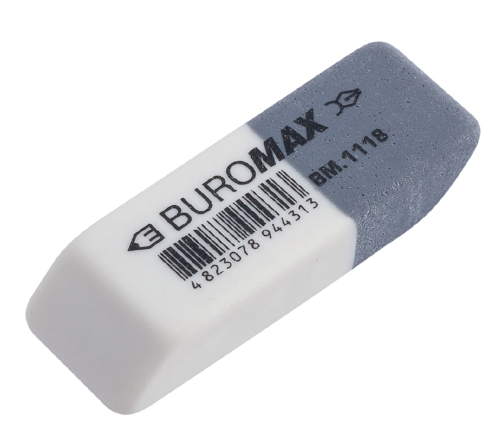
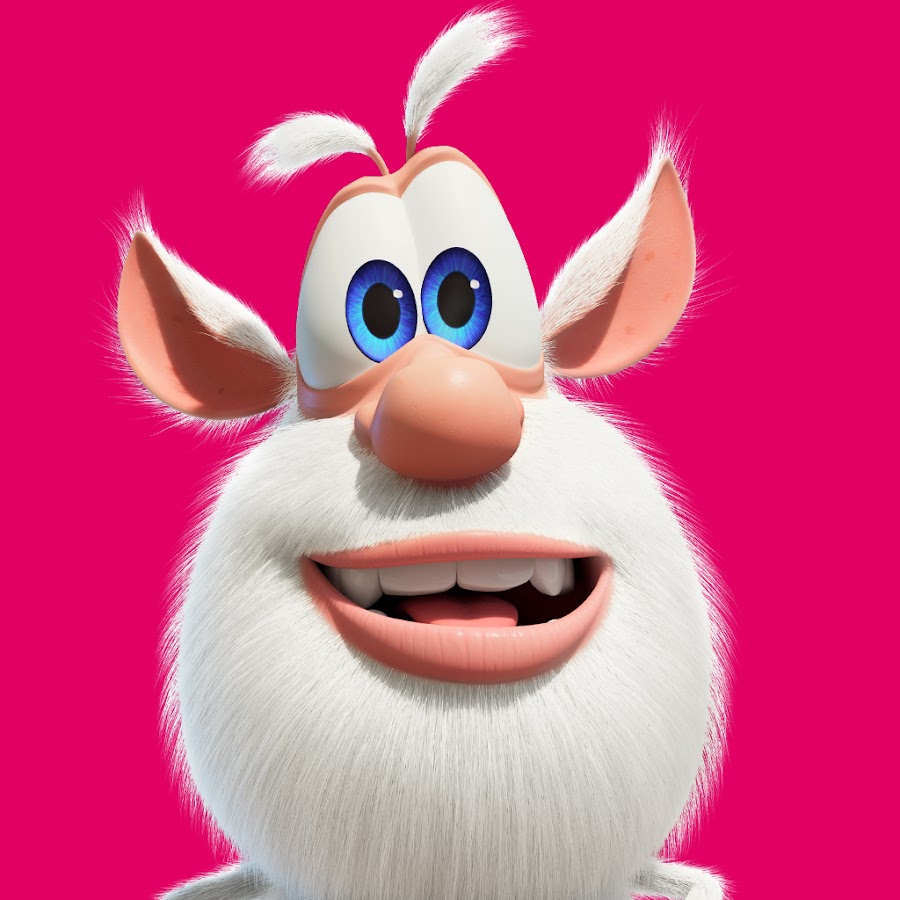

Baymax is cool хахаха я крутий
Baymax is cool хахаха я крутий


Big Hero 6 / Місто Героїв
Про Фільм
«Місто героїв»(англ. Big Hero 6; букв. Укр. Велика шістка героїв) - американський трьохвимірний комп'ютерний повнометражний анімаційний фільм 2014 року, створений студією «Walt Disney Animation Studios» і випущений кінокомпанією «Walt Disney Pictures». Заснований на однойменних персонажах коміксів видавництва Marvel, але, незважаючи на це, істотно відрізняється
від першоджерела. Режисери - Дон Холл і Кріс Вільямс. Фільм удостоївся премії «Оскар» як кращий анімаційний повнометражний фільм.
Ще про Беймакса
Як зробити бананово шоколадний десерт з двох інградієнтів
- Нам потрібно Шоколад темний - 100г і Шоколад молочний 100г
- Треба його розплавити
- Банани - 300г(вага без шкіри)
закинути в міксер
- Все змішати
- Кориця - 1/4 ч.л. (За бажанням)
- Перемішати і залити в форму 15 на 15см
- Забрати в морозильну камеру на 3-4 години
- Готово.Тепер можна розрізати і куштувати =^.^=
Це Зробив Гуменюк Юрій

КІНЕЦЬ

joipfjkjopg8rtguw09ej8h7vb87h47g7ytfg33j6gisgfsdag9j0ghduhfuhduhfuhudfhududhuhduhfudhfuhdufhuhdufhudhfudhufhdufhduhfuhuhuhduhduhudhudududududduuddudududdududuudduudduududdududududududududududududududududududuududududududuudududdududuududududu8duudufqewv4y0b76wo wyhjuffuuddu8udduduuddududududuududududududduududududududuidufidhupu8qfyw8x7bef8ev76tvx 6vfc6e i2rcq r6t6666666666td67ydyxdydydyydycydfydydydydcydydyddudududududududududududufdeejj7bc fy8w6t872yb6iu65f2ytcqw983u5gyhw87r666666666666666666666666666666666666666666666666666666666666666666666666666666666666666666666666666666666666666666666666666666666666666666666666666666666666666666666666666666666666666666666666666666666666666666666667867676767667676767676767777